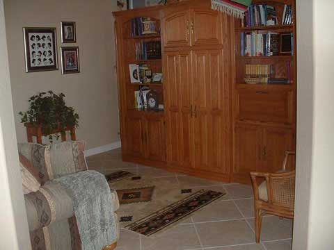

Real Estate
The library in this home is a perfect blend of intellect and tranquility, combining functionality with elegant design. It offers ample space for a wall of bookshelves and a full-size sofa, making it a perfect retreat for quiet contemplation. The library's efficient layout maximizes space without compromising comfort, while its expansive wall of bookshelves provides a home for literary collections of all genres. The full-size sofa provides a perfect blend of comfort and intellectual indulgence, allowing readers to sink into the pages of their favorite novels.The library is surrounded by abundant natural light, creating an inviting and inspiring reading environment. A large picture window bathes the library in natural light, providing a refreshing element to your literary pursuits. Beyond its practicality, the library serves as a quiet retreat, providing a sanctuary away from the hustle and bustle of daily life. It's a space where you can find solace and inspiration in the written page.In summary, the library is more than just a room; it's a literary escape, offering a space where the love for books is celebrated and moments of quiet reflection become a cherished part of your daily routine.
Call us at 1-555-NEW-HOME or e-mail us at hometour@isp.com for more information or to schedule a showing.
